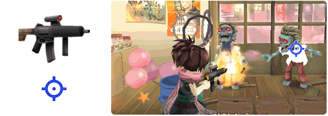
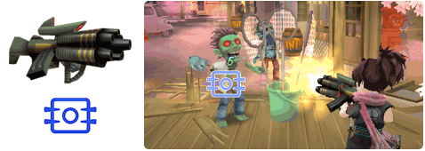
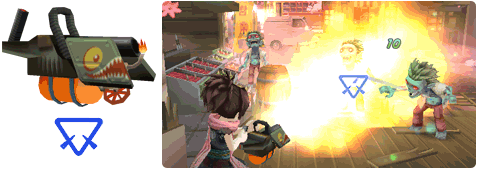
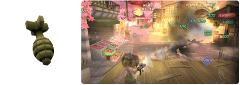

9 |
武器の種類 |
 |
|
このゲームには４種類の武器があります。 それぞれの特性を理解して素早く的確に使い分けられるかどうかが攻略のカギです。
●マシンガン 戦いの基本となる武器です。 威力は高くありませんが、弾数が無限なので、心置きなく連射し続けることが出来ます。

●ヘビーマシンガン 高い威力を持つ武器です。弾薬に限りがあるので、ピンチの場面での瞬間的な殲滅に活用しましょう。

●火炎放射器 敵を炎で包み、防御力を下げることが出来る武器です。ガードが硬い敵には特に有効です。

●グレネードランチャー 最強の威力を誇る武器です。１ステージで数発しか撃つことが出来ない切り札のような武器なので、ボス戦など、ここぞという場面のために温存してもいいかもしれません。

|
 |
 |
 |